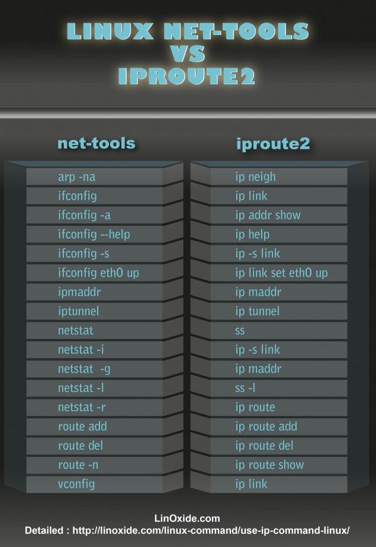

OSI七层模型
| 层次 | 名称 | 协议举例 |
|---|---|---|
| 7 | 应用层 | 比如: HTTP DNS FTP SMTP POP3 SSH…(这一层的协议非常多,与用户直接打交道,大多在这层) |
| 6 | 表示层 | (这一层的协议比较少见) |
| 5 | 会话层 | Sock5 PPTP NetBIOS 管道命名(常用于:进程间通讯) |
| 4 | 传输层 | TCP(传输控制协议) UDP(数据报协议) |
| 3 | 网络层 | IP(互联网协议) ICMP(互联网控制消息协议) IGMP(互联网组管理协议) IPsec(常用于VPN) |
| 2 | 链路层 | MAC ARP&RARP SLIP&PPP&PPPOE(常用于拨号上网) L2TP |
| 1 | 物理层 | USB协议 蓝牙协议 RS-232(串口标准协议) |
netcat
netcat 简介
简称 nc , 俗称网猫, 英文全称为 network communication
nc 本身很小,所以有一些衍生的版本,比如”OpenBSD netcat” ,很多主流的linux 发行版自带这个工具
以下的教程均以这个衍生版作为介绍
命令简介
nc 命令选项 主机 端口
- 命令选项:这部分有很多个选项
- 主机:可以没有,可能以”点分十进制”形式表示,也可能以”域名”形式表示
- 端口:这部分可能没有,可能是单个端口,也可能是端口范围(端口范围如右表示: 1-1024)
命令选项
nc 提供了一大堆【命令行选项】，分别对应它提供的功能。每个选项都是“单字母”滴。有些选项需要带【选项值】，有些不需要。
你要使用的选项都放在 nc 这个命令之后，每个选项前面要有一个【半角减号】，选项之间以空格分开。
在下面这个例子中，分别用到了三个选项（l、p、v），其中 12345 是选项 p 所带的【选项值】
nc -l -p 12345 -v
可以使用 nc -h 来查看所有的命令选项
- h: 输出帮助信息
- v: 显示详细的信息输出
- n: 对命令行中的”主机”,不进行域名解析 ,只对”点分格式”的ip起作用,对域名的形式,不能使用该选项
- p: 指定”端口号”
- l: 开启”监听模式”,nc作为**服务端”.如不使用该选项,nc默认作为客户端
- u: 使用UDP协议,如不加该选项,nc默认使用TCP
- w: 设置连接的超时间隔(N秒)
- q: 让nc 延时(N秒)再退出
- z: 开启”zero-I/O模式”,该选项仅用于”端口扫描”
- k: 配合 -l 选项使用,可以重复接受客户端连接
- X: 指定代理的类型
- x: 以 IP:port的格式指定代理的位置
- e: 启动某个进程,把该进程的”标准输入输出”与网络通讯对接
使用场景
(网络诊断)测试某个远程主机的【监听】端口是否可达
经常有这种需求，要判断某个主机的监听端口是否能连上。
导致监听端口【无法】，通常有两种原因：
- 其一，这个监听端口根本就【没开启】；
- 其二，监听端口虽然开启，但是被防火墙阻拦了。
对第1个原因，（如果你能在该主机上运行命令）可以直接用 netstat 这个命令查看监听端口是否开启
但对于第2个原因，netstat 就用不上了。这时候就可以用 nc 来帮你搞定。
用如下命令可以测试某个 IP 地址（x.x.x.x）上的某个监听端口（xx）是否开启。
nc -nv x.x.x.x xx
在测试链接的时候，如果你【没】使用 -w 这个超时选项，默认情况下 nc 会等待很久，然后才告诉你连接失败。
如果你所处的网络环境稳定且高速（比如：局域网内），那么，你可以追加“-w选项”，设置一个比较小的超时值。在下面的例子中，超时值设为3秒。
nc -nv -w 3 x.x.x.x xx
只需再上面的命令添加-u选项,即可测试UDP的环境
(网络诊断)判断防火墙是否“允许 or 禁止”某个端口
前一个章节（招数1）的场景是——已经有某个网络软件开启了监听端口，然后用 nc 测试端口是否可达。
现在换另一个场景：
假设你正在配置防火墙规则，禁止 TCP 的 8080 端口对外监听。那么，你如何【验证】自己的配置是 OK 滴？
更进一步说：如果当前【没有】任何软件开启 8080 这个监听端口，你如何判断：该端口号是否会被防火墙阻拦？
为了叙述方便，设想如下场景：
有两台主机——“主机C”充当客户端，“主机S”充当服务端。
然后要判断“主机S”上的防火墙是否会拦截其它主机对 8080 TCP 端口的连接。
在“主机S”上运行 nc，让它在 8080 端口，命令如下：
nc -lv -p 8080
然后在“主机C”上运行 nc，测试“主机S”上的 8080 端口是否可达(参考上一节)
在默认情况下，nc 开启 listen 模式充当服务端，在接受【第一次】客户端连接之后，就会把监听端口关闭。
为啥会这样捏？因为当年设计 nc 更多的是作为某种网络诊断/配置工具，并【不是】真拿它当服务端软件来用的。
如果你想要让 nc 始终监听模式，使之能【重复】接受客户端发起的连接，可以追加 -k 选项。
端口扫描
不论是 TCP 还是 UDP，协议规定的【有效】端口号范围都是：1 ~ 65535
nc -znv x.x.x.x 1-1024
-z参数意思是：开启“zero-I/O 模式”。该模式指的是：nc 只判断某个监听端口是否能连上，连上后【不】与对端进行数据通讯。
nc -znv x.x.x.x 1-1024 2>&1 | grep succeeded
由于“-v 选项”产生的输出位于【stderr】，上述命令中的 2>&1 用来把【stderr】合并到【stdout】
grep 命令用来进行【过滤】。对于 Windows 系统，默认【没有】grep 命令，需改用 find 命令过滤。
同时运行多个 nc，分别扫描不同的端口范围。可以提高效率
通过代理
nc -X 5 -x 127.0.0.1:9050 -q 3 -v program-think.blogspot.com 443
-X : 代理的类型(5: Socks5; 4: socks4; connect:connect型的HTTP代理)-x : 代理的地址和端口
(信息收集)用 nc 探测“服务器类型”和“软件版本”（以 SSH 为例）
echo “EXIT” | nc -vq 5 服务器域名 22
获取网页代码
echo -e “GET /index.html HTTP/1.0\r\n\r\n” | nc-tor -vq 5 服务器域名 端口
可以把 nc 抓下来的 HTML 源代码，（在命令行中用“大于号”）重定向到某个 HTML 文件，然后就可以用你本机的浏览器阅读之。
(系统管理)用 nc 传输文件
为了叙述方便，假设你有两台主机 A 与 B，你要把 A 主机上的文件 file1 传输到 B 主机上，保存为 file2
你先在【接收端】（B 主机）运行如下命令（其中的 xxx 是端口号)
nc -l -p xxx > file2
然后在【发送端】（A 主机）运行如下命令
nc x.x.x.x xxx < file1
第二条命令中的 xxx 是端口号，要与第一条命令中的端口号相同；第二条命令中的 x.x.x.x 是【主机 B】的 IP 地址。
使用nc 复制整个硬盘
假设你要把 A 主机 /dev/sda 磁盘的【原始数据】整个复制到 B 主机的 /dev/sdb 磁盘。
你先在【接收端】（B 主机）运行如下命令（其中的 xxx 是端口号）
nc -l -p xxx | dd of=/dev/sdb
然后在【发送端】（A 主机）运行如下命令
dd if=/dev/sda | nc x.x.x.x xxx
更多
请查看源博客
https://program-think.blogspot.com/2019/09/Netcat-Tricks.html
netstat
查看打开的端口
看到本机开启的【所有】监听端口,Windows执行下方命令
netstat -an | find “LISTEN”
netstat -ano | find “LISTEN”
-o 选项可以看到是哪个进程开启的, 如果使用不了,可以用findstr 代替 find.或者在 powershell 里面运行
对于Linux,可以把 find 替换成 grep ,也是一样的
windows 命令下的端口转发
netsh interface portproxy add v4tov4 listenport=新开的监听端口 listenaddress=新开端口的绑定地址 connectaddress=要转发的地址 connectport=要转发的端口 protocol=tcp
netsh interface portproxy delete v4tov4 listenport=新开的监听端口 listenaddress=新开端口的绑定地址
命令举例
比方说，俺本地已经运行了 Tor，端口是 8118，绑定在 127.0.0.1
如果俺希望建立一个新的端口，端口号是 12345（这个端口号是俺随手编的，你也可以用其它端口号），绑定在 0.0.0.0 上，那么就执行如下命令。然后，发往 12345 端口的数据流就会被转发到 8118 端口。
netsh interface portproxy add v4tov4 listenport=12345 listenaddress=0.0.0.0 connectaddress=127.0.0.1 connectport=8118 protocol=tcp
traceroute
简介
linux系统中是 traceroute,在MS Windows中为tracert。traceroute通过发送小数据包到目的主机直到其返回，来测量其耗时。一条路径上的每个设备traceroute要测3次。输出结果中包括每次测试的时间(ms)和设备的名称及其IP地址。
traceroute [-dFlnrvx][-f<存活数值>][-g<网关>...][-i<网络界面>][-m<存活数值>][-p<通信端口>][-s<来源地址>][-t<服务类型>][-w<超时秒数>][主机名称或IP地址][数据包大小]-d 使用Socket层级的排错功能。
-f 设置第一个检测数据包的存活数值TTL的大小。
-F 设置勿离断位。
-g 设置来源路由网关，最多可设置8个。
-i 使用指定的网络界面送出数据包。
-I 使用ICMP回应取代UDP资料信息。
-m 设置检测数据包的最大存活数值TTL的大小。
-n 直接使用IP地址而非主机名称。可以加快运行速度
-p 设置UDP传输协议的通信端口。
-r 忽略普通的Routing Table，直接将数据包送到远端主机上。
-s 设置本地主机送出数据包的IP地址。
-t 设置检测数据包的TOS数值。
-v 详细显示指令的执行过程。
-w 设置等待远端主机回报的时间。
-x 开启或关闭数据包的正确性检验。
-q 默认数值是3 , 表示向目标发送3个数据包.- 一台主机有时会看到一些行以星号表示，出现这样的情况，可能是防火墙封掉了ICMP的返回信息，所以得不到什么相关的数据包返回数据。
Linux iproute 工具

iproute2套件里提供了许多增强功能的命令，ip命令即是其中之一。
help 说明
Usage: ip [ OPTIONS ] OBJECT { COMMAND | help }
where OBJECT := { link | address | addrlabel | route | rule | neigh | ntable |
tunnel | tuntap | maddress | mroute | mrule | monitor | xfrm |
netns | l2tp | fou | macsec | tcp_metrics | token | netconf | ila |
vrf | sr }
OPTIONS := { -V[ersion] | -s[tatistics] | -d[etails] | -r[esolve] |
-h[uman-readable] | -iec | -j[son] | -p[retty] |
-f[amily] { inet | inet6 | ipx | dnet | mpls | bridge | link } |
-4 | -6 | -I | -D | -M | -B | -0 |
-l[oops] { maximum-addr-flush-attempts } | -br[ief] |
-o[neline] | -t[imestamp] | -ts[hort] | -b[atch] [filename] |
-rc[vbuf] [size] | -n[etns] name | -a[ll] | -c[olor]}
常用OBJECT的取值含义如下：
link：网络设备
address：设备上的协议（IP或IPv6）地址
addrlabel：协议地址选择的标签配置
route：路由表条目
rule：路由策略数据库中的规则
常用OPTIONS的取值含义如下：
-V，-Version：显示指令版本信息
-s，-stats，statistics：输出详细信息
-h，-human，-human-readable：输出人类可读的统计信息和后缀
-o，-oneline：将每条记录输出到一行，用‘\’字符替换换行符
command设置针对指定对象执行的操作，它和对象的类型有关。一般情况下，ip支持对象的增加(add)、删除(delete)和展示(show或list)。有些对象不支持这些操作，或者有其它的一些命令。对于所有的对象，用户可以使用help命令获得帮助。这个命令会列出这个对象支持的命令和参数的语法。如果没有指定对象的操作命令，ip会使用默认的命令。一般情况下，默认命令是list，如果对象不能列出，就会执行help命令。
arguments是命令的一些参数，它们倚赖于对象和命令。ip支持两种类型的参数：flag和parameter。flag由一个关键词组成；parameter由一个关键词加一个数值组成。为了方便，每个命令都有一个可以忽略的默认参数。例如，参数dev是ip link命令的默认参数，因此ip link ls eth0等于ip link ls dev eth0。命令的默认参数将使用default标出。
例子
ip -4 a
只查看ipv4的信息
ip -4 a show wlan0
ip link ls up
查看启动的网卡
ip link set eth0 up
说明：启用被禁用的网卡
ip link set eth0 down
说明：禁用网卡
ip link set mtu 9000 dev eth0
ip addr add 2.2.2.2/16 dev eth0
给网卡增加一个地址
ip route show
输出内容第一条是默认的路由，我们可以根据我们的需要改动它
metric 1002：跳跃计数，确定网关的优先级，默认20，数值越小优先级越高
proto kernel：该路由的协议，主要有redirect，kernel，boot，static，ra等，其中kernel指的是直接由核心判断自动设定ip route add default via 192.168.0.150/24
说明：所有的网络数据包都通过192.168.0.150来转发，而不是以前的默认路由
ip route add 172.16.32.32 via 192.168.0.150/24 dev enp0s3
说明：修改特定网卡的默认路由
ip route del 172.17.160.0/20
说明：删除路由
ip route add 192.168.1.0/24 dev eth0
* 要路由的所有流量从 eth0 网卡的192.168.1.254网关通过
ip route flush cache
说明：刷新路由表
ip -s link
说明:反应网络通信的质量
输出重点内容详解：
RX：表示接收
TX：表示发送
bytes：接收/发送的字节数
packets：接收/发送的包数
errors：接收/发送的带有错误的包总数
dropped：由于处理资源不足导致接收/发送的丢弃的包数
overrun：因接收溢出（环形缓冲区）导致丢失的包；通常如果接口溢出，则表示内核中存在严重问题，或者说服务器上该网络设备的处理设备太慢
mcast：接收到的多播包数
carrier：因数据链路错误导致发送失败的包数
collsns：因在网络上发送冲突而导致的失败数- ip link不支持tab键补齐
ip route add 目标主机 via 网关
1）添加到达目标主机的路由记录ip route add 目标网络/掩码 via 网关
2）添加到达网络的路由记录作用域
> scope {global|link|host}]：指明作用域
- global: 全局可用，即两个接口进来的数据我都可以响应。是默认状态。
- link: 仅链接可用，进来的数据只有直接相连的那个接口能够响应
- host: 本机可用，即只能自己访问